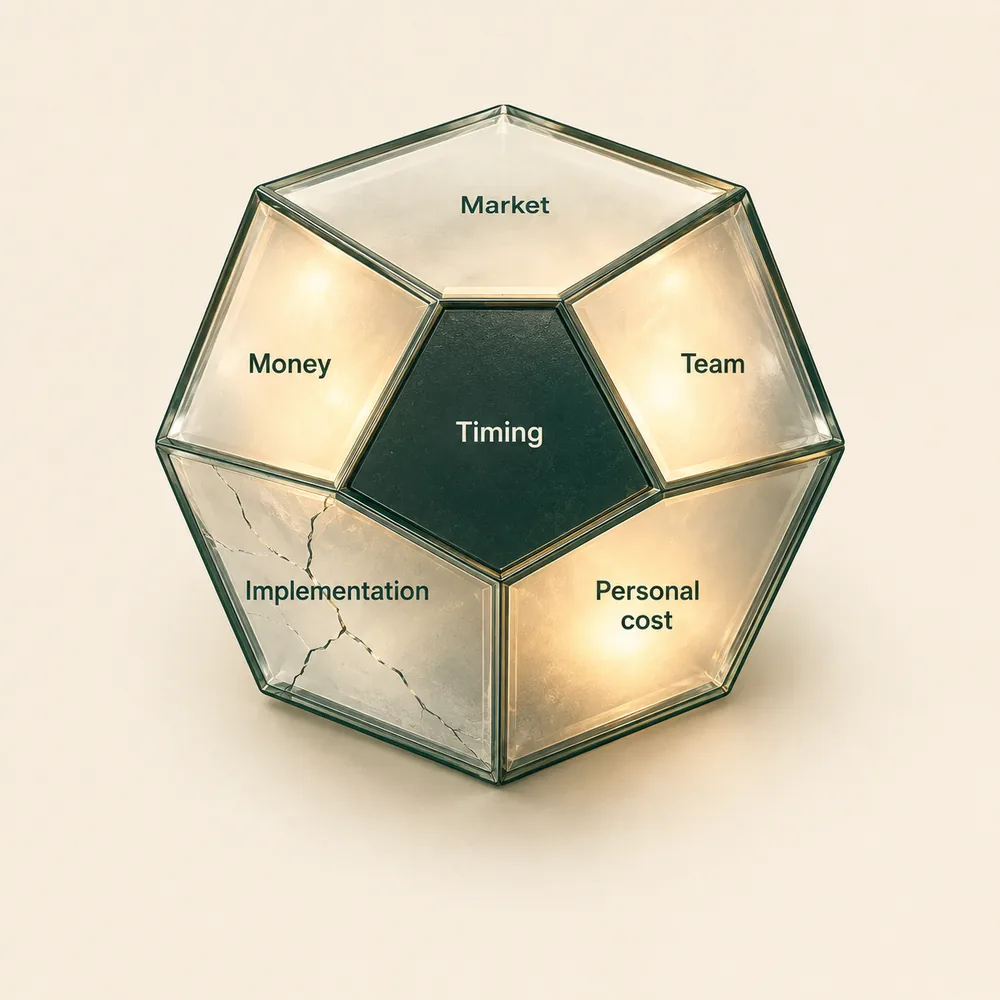

Decision frame
First we make the decision specific enough to be tested: what exactly is being decided, why now and not later, and what it commits you to once it is made. Many decisions change shape at this step alone.
Clarity comes through testing
Bring one real business decision - the one you are about to make, not one you are wondering about. We put it under pressure from several positions that disagree with each other, so the assumptions, the consequences, and the blind spots show before you act. The decision may hold. Then you know why.
Take the 3-minute Decision CheckThis is for an owner in front of a move that costs something to make and something to undo: a pivot, a new direction, a key hire, a partner change, a pricing change, a new market, more money into an existing product, closing a line, automation with AI, or giving agents more autonomy. Not a hypothetical. The one on your desk.
Author of the Business Mindset board game, now becoming part of the TriMind app.

One decision, one map
First we make the decision specific enough to be tested: what exactly is being decided, why now and not later, and what it commits you to once it is made. Many decisions change shape at this step alone.
Then we put the move under pressure from market, money, team, timing, implementation, and personal cost - and let them disagree. Where they disagree is where the assumptions live.
You leave with a written map: the case for moving, the case for waiting, what must be checked before either, and the blind spots that changed the picture. Written in your words, so a month later it still reads as yours.

Every decision has six faces: market, money, team, timing, implementation, personal cost. A face that has not been tested stays dark. A tested face lights up. A cracked one shows where the decision does not hold. Your Decision Map is your crystal after the test: which faces held, and which one deserves work before the step.
You fill in a short form and come to a 30-minute session. There we look at your question from several angles, and you decide whether to go deeper or whether it is already clear. I work online, one on one. Sometimes in groups. In person in California: during the upcoming trip and at our studio evening.
The ladder
$0. The first step: the Decision Check on this page and a 30-minute session. You see what you had not seen and decide whether to go further.
$250. Decision Stress Test: 2.5 hours of personal work on one decision and a written Decision Map after it. Not advice, not consulting hours. Clarity before commitment: one consequential decision, tested from several sides, and a map of what the test showed. Usable the next morning.
If in the first 30 minutes of the stress test you see it is not for you, we stop, and you do not pay.
$500 a month. Advisory in a mastermind format: four sessions of ninety minutes, one decision carried to its first real action, with homework and tools between sessions.
Each step is named once, when it fits. The rest is your call.
DECISION MAP
move all positioning to one territory: an owner's important and expensive decisions. Horizon: 90 days, to the end of November.
A channel of trust and a live network of owners already exist; a clear person and a clear buying moment; the service can be sold before the app ships; one principle holds everything: clarity through testing.
The app is not ready, and the temptation to sell it is real; the network was built in a different role; over 90 days the positioning will want to change three times on the reaction to single posts.
Ten conversations with owners at the moment of a decision, by September 4: how many reach a session, how many buy. What they buy: a single test or a month. Where they come from: social, referrals, meetups.
The choice was already made; what was collected afterwards was weighed against it. The open question was a different one: not whether, but when and how much to commit. And a second thing: people had already been coming for this and leaving with free instructions; what was lost was not demand but the door.
The page lives at its address, the Decision Check is open, the first ten messages are sent. Date: September 4, the first Friday count.
Example: the author's own decision, August 2026

Alesia Yuzhakov, host and author. Sixteen years in small business, the last two in AI technology. Co-founder of AI TriMind.
I have made a lot of decisions in my career. The hard part was never the decision itself. It was deciding without knowing what to expect, and then fixing what I could not have seen. Technology has changed that: today you can walk the possible scenarios before you commit. That is what we build.
For three and a half years I ran a photo and video studio and event space in Silicon Valley, with 15 to 20 events a month. That is where I wrote the first Business Mindset board game - so that owners would sit at one table and talk about their real businesses, not their plans. I ran it in person, one on one and in groups, produced it in the United States, and nearly the whole print run sold. The small business owner meetups I have run since grew into a circle of founders in the Valley who keep coming back with their next decision. Several changed direction after those sessions and told me so.
Then I went looking for a technical partner and found a team. AI TriMind is now a technology company. The Business Mindset game is digitized, and with it a simulator of decision scenarios, daily practices, and sprints - all inside the TriMind app, releasing in autumn 2026. Behind it stands a serious engineering team and an agent system of our own.
The Decision Stress Test is the same method, run live, with me.
A few taps, one decision. You get its type, the one blind spot most often unlooked-at in decisions like it, and the door to a call. Your answers stay in your browser; we count only how many people finish.
Your Decision Check
Book a free 30-minute callNo. One decision, tested from several sides, with a written map. No programs to enroll in and no personality types.
Then the test shows why the decision holds and what to check before the first step. A clear yes is a strong result.
No. Bring the decision as it is. The 30-minute session starts from your words.
What you bring stays between us. Nothing about your decision is published or shared; your check answers stay in your browser; the map is yours.
Take the check: the first questions are exactly about that. If it is early, the check says so, kindly.
Sessions in English or Russian, whichever you prefer.